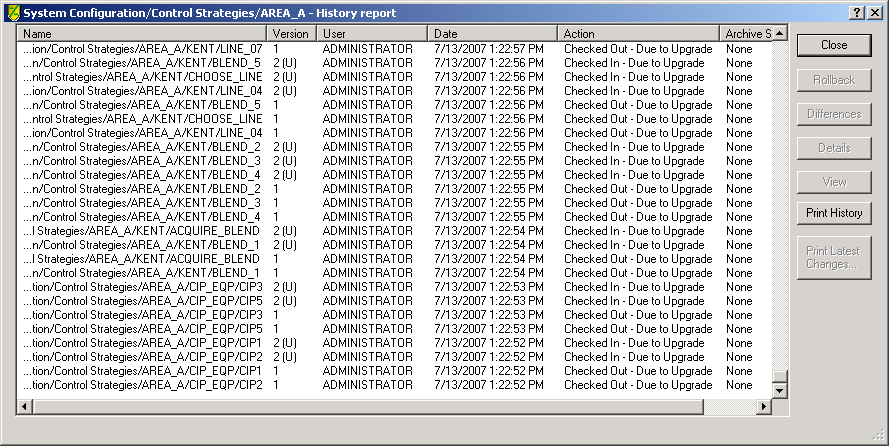

Detecting changes due to upgrades
The features of VCAT that are useful when determining the cause of changes after an upgrade include:
- Labels for upgrade start and completion
- Labels for items changed by the upgrade
- A (U) indicator in the Version column of Histories and History Reports to indicate a change is the result of the upgrade.
After the upgrade is complete, use the VCAT History report dialog to determine where there are version changes due to the upgrade. For example, the following figure shows that several AREA_A items changed as a result of the upgrade (they have (U) next to the version number and the action column message is Checked In - Due to Upgrade). You can now use the VCAT differences views to examine the changes caused by the DeltaV upgrade.

Related information